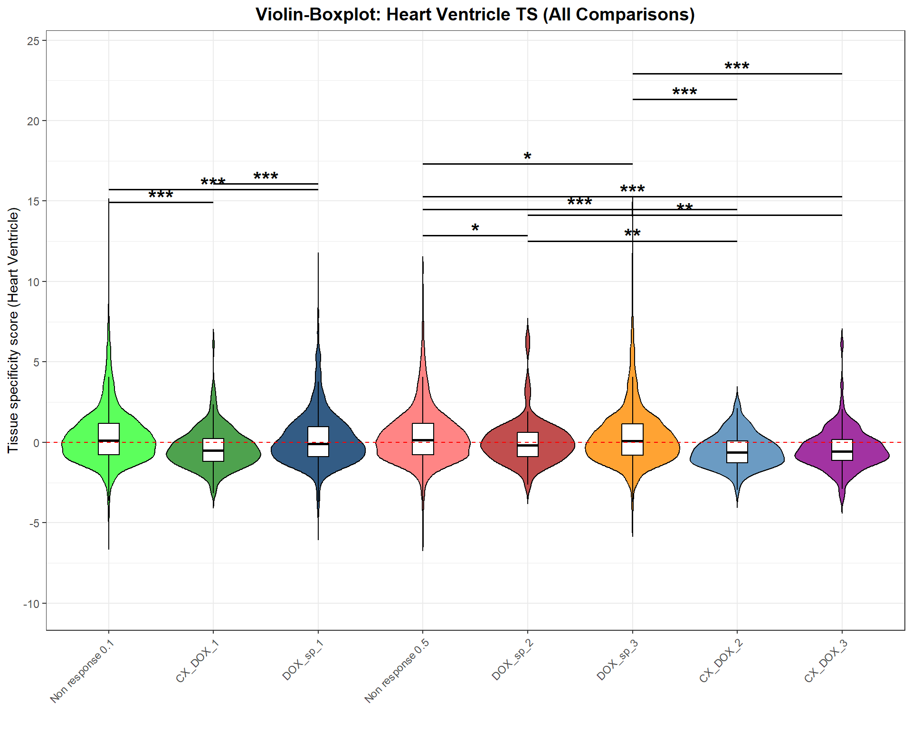

Figure_5
Last updated: 2025-08-07
Checks: 6 1
Knit directory: Paul_CX_2025/
This reproducible R Markdown analysis was created with workflowr (version 1.7.1). The Checks tab describes the reproducibility checks that were applied when the results were created. The Past versions tab lists the development history.
The R Markdown is untracked by Git. To know which version of the R
Markdown file created these results, you’ll want to first commit it to
the Git repo. If you’re still working on the analysis, you can ignore
this warning. When you’re finished, you can run
wflow_publish to commit the R Markdown file and build the
HTML.
Great job! The global environment was empty. Objects defined in the global environment can affect the analysis in your R Markdown file in unknown ways. For reproduciblity it’s best to always run the code in an empty environment.
The command set.seed(20250129) was run prior to running
the code in the R Markdown file. Setting a seed ensures that any results
that rely on randomness, e.g. subsampling or permutations, are
reproducible.
Great job! Recording the operating system, R version, and package versions is critical for reproducibility.
Nice! There were no cached chunks for this analysis, so you can be confident that you successfully produced the results during this run.
Great job! Using relative paths to the files within your workflowr project makes it easier to run your code on other machines.
Great! You are using Git for version control. Tracking code development and connecting the code version to the results is critical for reproducibility.
The results in this page were generated with repository version c628908. See the Past versions tab to see a history of the changes made to the R Markdown and HTML files.
Note that you need to be careful to ensure that all relevant files for
the analysis have been committed to Git prior to generating the results
(you can use wflow_publish or
wflow_git_commit). workflowr only checks the R Markdown
file, but you know if there are other scripts or data files that it
depends on. Below is the status of the Git repository when the results
were generated:
Ignored files:
Ignored: .RData
Ignored: .Rhistory
Ignored: .Rproj.user/
Ignored: 0.1 box.svg
Ignored: Rplot04.svg
Ignored: analysis/figure/
Untracked files:
Untracked: analysis/Figure_5.Rmd
Note that any generated files, e.g. HTML, png, CSS, etc., are not included in this status report because it is ok for generated content to have uncommitted changes.
There are no past versions. Publish this analysis with
wflow_publish() to start tracking its development.
📌 Top BP (Cluster Profiler)
### 📦 Load Required Libraries
library(tidyverse)Warning: package 'tidyverse' was built under R version 4.3.2Warning: package 'tidyr' was built under R version 4.3.3Warning: package 'readr' was built under R version 4.3.3Warning: package 'purrr' was built under R version 4.3.3Warning: package 'dplyr' was built under R version 4.3.2Warning: package 'stringr' was built under R version 4.3.2Warning: package 'lubridate' was built under R version 4.3.3library(ComplexHeatmap)Warning: package 'ComplexHeatmap' was built under R version 4.3.1library(circlize)Warning: package 'circlize' was built under R version 4.3.3library(grid)
### 📁 Define CorMotif GO Enrichment Files
go_files <- list(
"Non response (0.1)" = "data/BP/CorMotif_Terms/GO_BP_Non_response_(0.1).csv",
"CX_DOX_1" = "data/BP/CorMotif_Terms/GO_BP_CX-DOX_mid-late_response_(0.1).csv",
"DOX_sp_1" = "data/BP/CorMotif_Terms/GO_BP_DOX_only_mid-late_(0.1).csv",
"Non response (0.5)" = "data/BP/CorMotif_Terms/GO_BP_Non_response_(0.5).csv",
"DOX_sp_2" = "data/BP/CorMotif_Terms/GO_BP_DOX_specific_response_(0.5).csv",
"DOX_sp_3" = "data/BP/CorMotif_Terms/GO_BP_DOX_only_mid-late_response_(0.5).csv",
"CX_DOX_2" = "data/BP/CorMotif_Terms/GO_BP_CX_total_+_DOX_early_response_(0.5).csv",
"CX_DOX_3" = "data/BP/CorMotif_Terms/GO_BP_DOX_early_+_CX-DOX_mid-late_response_(0.5).csv"
)
### 🔍 Step 1: Extract Top 5 GO Terms Per Group Based on Adjusted P-value
top_go_terms <- map(go_files, function(file) {
df <- tryCatch(read.csv(file), error = function(e) return(NULL))
if (!is.null(df) && nrow(df) > 0 && all(c("Description", "p.adjust") %in% colnames(df))) {
df %>%
as_tibble() %>%
filter(p.adjust < 0.05) %>%
arrange(p.adjust) %>%
dplyr::select(Description) %>%
slice_head(n = 5) %>%
pull(Description) %>%
unique()
} else {
character(0)
}
}) %>% unlist() %>% unique()
### 🔁 Step 2: Collect All Matrix Values for Top GO Terms
go_matrix_df <- map_dfr(names(go_files), function(group) {
file <- go_files[[group]]
df <- tryCatch(read.csv(file), error = function(e) return(tibble()))
if (nrow(df) == 0 || !all(c("Description", "pvalue", "p.adjust") %in% colnames(df))) {
tibble(Description = top_go_terms, pvalue = NA, p.adjust = NA, log10p = NA, Group = group)
} else {
df_filtered <- df %>%
as_tibble() %>%
dplyr::select(Description, pvalue, p.adjust) %>%
filter(Description %in% top_go_terms)
tibble(Description = top_go_terms) %>%
left_join(df_filtered, by = "Description") %>%
mutate(
log10p = ifelse(!is.na(pvalue), -log10(pvalue), NA),
Group = group
)
}
})
### 🧱 Step 3: Pivot to Heatmap Matrices
heatmap_data <- go_matrix_df %>%
dplyr::select(Description, Group, log10p) %>%
pivot_wider(names_from = Group, values_from = log10p) %>%
column_to_rownames("Description") %>%
as.matrix()
pval_matrix <- go_matrix_df %>%
dplyr::select(Description, Group, pvalue) %>%
pivot_wider(names_from = Group, values_from = pvalue) %>%
column_to_rownames("Description") %>%
as.matrix()
p_adj_matrix <- go_matrix_df %>%
dplyr::select(Description, Group, p.adjust) %>%
pivot_wider(names_from = Group, values_from = p.adjust) %>%
column_to_rownames("Description") %>%
as.matrix()
### 🎨 Step 4: Define Heatmap Color Gradient
breaks <- seq(0, 20, by = 2.5)
palette <- colorRampPalette(c("white", "#fde0dd", "#fa9fb5", "#f768a1", "#c51b8a", "#7a0177", "#49006a"))(length(breaks))
col_fun <- colorRamp2(breaks, palette)
### 🔥 Step 5: Draw Heatmap with Stars for p.adjust < 0.05
ht <- Heatmap(
heatmap_data,
name = "-log10(p)",
col = col_fun,
na_col = "white",
rect_gp = gpar(col = "black", lwd = 0.5),
cluster_rows = FALSE,
cluster_columns = FALSE,
row_names_gp = gpar(fontsize = 9),
column_names_gp = gpar(fontsize = 9),
column_names_rot = 45,
cell_fun = function(j, i, x, y, width, height, fill) {
adj_p <- p_adj_matrix[i, j]
if (!is.na(adj_p) && adj_p < 0.05) {
grid.text("*", x, y, gp = gpar(fontsize = 12))
}
},
heatmap_legend_param = list(
title = "-log10(p value)",
at = breaks,
labels = as.character(breaks),
legend_width = unit(5, "cm"),
direction = "horizontal",
title_gp = gpar(fontsize = 10, fontface = "bold"),
labels_gp = gpar(fontsize = 9)
)
)
### 🖼️ Final Output
draw(ht, heatmap_legend_side = "top")
📌 Proportion of Heart Specific Genes (Combined)
# ----------------- Load Required Libraries -----------------
library(dplyr)
library(ggplot2)
library(org.Hs.eg.db)Warning: package 'AnnotationDbi' was built under R version 4.3.2Warning: package 'BiocGenerics' was built under R version 4.3.1Warning: package 'Biobase' was built under R version 4.3.1Warning: package 'IRanges' was built under R version 4.3.1Warning: package 'S4Vectors' was built under R version 4.3.2library(AnnotationDbi)
# ----------------- Load Heart-Specific Genes -----------------
heart_genes <- read.csv("data/Human_Heart_Genes.csv", stringsAsFactors = FALSE)
heart_genes$Entrez_ID <- mapIds(
org.Hs.eg.db,
keys = heart_genes$Gene,
column = "ENTREZID",
keytype = "SYMBOL",
multiVals = "first"
)
heart_entrez_ids <- na.omit(heart_genes$Entrez_ID)
# ----------------- Load CorrMotif Groups -----------------
# 0.1 µM
prob_1_0.1 <- as.character(read.csv("data/prob_1_0.1.csv")$Entrez_ID)
prob_2_0.1 <- as.character(read.csv("data/prob_2_0.1.csv")$Entrez_ID)
prob_3_0.1 <- as.character(read.csv("data/prob_3_0.1.csv")$Entrez_ID)
# 0.5 µM
prob_1_0.5 <- as.character(read.csv("data/prob_1_0.5.csv")$Entrez_ID)
prob_2_0.5 <- as.character(read.csv("data/prob_2_0.5.csv")$Entrez_ID)
prob_3_0.5 <- as.character(read.csv("data/prob_3_0.5.csv")$Entrez_ID)
prob_4_0.5 <- as.character(read.csv("data/prob_4_0.5.csv")$Entrez_ID)
prob_5_0.5 <- as.character(read.csv("data/prob_5_0.5.csv")$Entrez_ID)
# ----------------- Annotate CorrMotif Groups -----------------
df_0.1 <- data.frame(Entrez_ID = unique(c(prob_1_0.1, prob_2_0.1, prob_3_0.1))) %>%
mutate(
Response_Group = case_when(
Entrez_ID %in% prob_1_0.1 ~ "Non response (0.1)",
Entrez_ID %in% prob_2_0.1 ~ "CX_DOX_1",
Entrez_ID %in% prob_3_0.1 ~ "DOX_sp_1"
),
Category = ifelse(Entrez_ID %in% heart_entrez_ids, "Heart-specific Genes", "Non-Heart-specific Genes"),
Concentration = "0.1"
)
df_0.5 <- data.frame(Entrez_ID = unique(c(prob_1_0.5, prob_2_0.5, prob_3_0.5, prob_4_0.5, prob_5_0.5))) %>%
mutate(
Response_Group = case_when(
Entrez_ID %in% prob_1_0.5 ~ "Non response (0.5)",
Entrez_ID %in% prob_2_0.5 ~ "DOX_sp_2",
Entrez_ID %in% prob_3_0.5 ~ "DOX_sp_3",
Entrez_ID %in% prob_4_0.5 ~ "CX_DOX_2",
Entrez_ID %in% prob_5_0.5 ~ "CX_DOX_3"
),
Category = ifelse(Entrez_ID %in% heart_entrez_ids, "Heart-specific Genes", "Non-Heart-specific Genes"),
Concentration = "0.5"
)
# ----------------- Combine Data -----------------
df_combined <- bind_rows(df_0.1, df_0.5)
# ----------------- Calculate Proportions -----------------
proportion_data <- df_combined %>%
group_by(Concentration, Response_Group, Category) %>%
summarise(Count = n(), .groups = "drop") %>%
group_by(Concentration, Response_Group) %>%
mutate(Percentage = Count / sum(Count) * 100)
# ----------------- Fisher's Exact Test -----------------
run_fisher_test <- function(df, ref_group) {
ref_counts <- df %>%
filter(Response_Group == ref_group) %>%
dplyr::select(Category, Count) %>%
{setNames(.$Count, .$Category)}
df %>%
filter(Response_Group != ref_group) %>%
group_by(Response_Group) %>%
summarise(
p_value = {
group_counts <- Count[Category %in% c("Heart-specific Genes", "Non-Heart-specific Genes")]
if (length(group_counts) < 2) group_counts <- c(group_counts, 0)
contingency_table <- matrix(c(
group_counts[1], group_counts[2],
ref_counts["Heart-specific Genes"], ref_counts["Non-Heart-specific Genes"]
), nrow = 2)
fisher.test(contingency_table)$p.value
},
.groups = "drop"
) %>%
mutate(Significance = ifelse(!is.na(p_value) & p_value < 0.05, "*", ""))
}
# Run Fisher's test for each concentration
fisher_0.1 <- run_fisher_test(proportion_data %>% filter(Concentration == "0.1"), "Non response (0.1)")
fisher_0.5 <- run_fisher_test(proportion_data %>% filter(Concentration == "0.5"), "Non response (0.5)")
# Combine results
fisher_all <- bind_rows(
fisher_0.1 %>% mutate(Concentration = "0.1"),
fisher_0.5 %>% mutate(Concentration = "0.5")
)
# ----------------- Merge Fisher Results -----------------
proportion_data <- proportion_data %>%
left_join(fisher_all, by = c("Concentration", "Response_Group"))
# ----------------- Reorder Factor Levels -----------------
proportion_data$Response_Group <- factor(proportion_data$Response_Group, levels = c(
"Non response (0.1)", "CX_DOX_1", "DOX_sp_1",
"Non response (0.5)", "DOX_sp_2", "DOX_sp_3", "CX_DOX_2", "CX_DOX_3"
))
# ----------------- Significance Star Labels -----------------
label_data <- proportion_data %>%
group_by(Concentration, Response_Group) %>%
summarise(Significance = dplyr::first(Significance), .groups = "drop") %>%
filter(!is.na(Significance)) %>%
mutate(y_pos = 100)
# ----------------- Final Plot -----------------
ggplot(proportion_data, aes(x = Response_Group, y = Percentage, fill = Category)) +
geom_bar(stat = "identity", position = "stack") +
geom_text(
data = label_data,
aes(x = Response_Group, y = y_pos, label = Significance),
inherit.aes = FALSE,
size = 5,
color = "black"
) +
facet_wrap(~ Concentration, scales = "free_x") +
scale_fill_manual(values = c(
"Heart-specific Genes" = "#4daf4a",
"Non-Heart-specific Genes" = "#377eb8"
)) +
scale_y_continuous(limits = c(0, 110), expand = c(0, 0)) +
labs(
title = "Heart-Specific Gene Proportions Across CorrMotif Groups",
x = "Response Groups",
y = "Percentage of Genes",
fill = "Gene Category"
) +
theme_minimal(base_size = 14) +
theme(
plot.title = element_text(size = 16, hjust = 0.5, face = "bold"),
axis.title.x = element_text(size = 14, face = "bold"),
axis.title.y = element_text(size = 14, face = "bold"),
axis.text.x = element_text(size = 11, angle = 45, hjust = 1),
axis.text.y = element_text(size = 12),
legend.title = element_text(size = 13),
legend.text = element_text(size = 12),
strip.text = element_text(size = 14, face = "bold"),
panel.border = element_rect(color = "black", fill = NA, linewidth = 1.2),
panel.spacing = unit(1.2, "lines")
)
📌 Tissue Specificity Score
# 📦 Load Required Libraries
library(ggplot2)
library(dplyr)
# ✅ Step 1: Load CorrMotif group assignments
grouped_files <- list(
"data/prob_1_0.1.csv" = "Non response 0.1",
"data/prob_2_0.1.csv" = "CX_DOX_1",
"data/prob_3_0.1.csv" = "DOX_sp_1",
"data/prob_1_0.5.csv" = "Non response 0.5",
"data/prob_2_0.5.csv" = "DOX_sp_2",
"data/prob_3_0.5.csv" = "DOX_sp_3",
"data/prob_4_0.5.csv" = "CX_DOX_2",
"data/prob_5_0.5.csv" = "CX_DOX_3"
)
group_order <- unname(unlist(grouped_files)) # group order for consistent plotting
all_groups <- bind_rows(lapply(names(grouped_files), function(f) {
read.csv(f) %>% mutate(Group = grouped_files[[f]])
})) %>% mutate(Entrez_ID = as.character(Entrez_ID))
# ✅ Step 2: Load TS data
ts_data <- read.csv("data/TS.csv") %>%
mutate(Entrez_ID = as.character(Entrez_ID))
# ✅ Step 3: Merge and clean
merged_data <- all_groups %>%
left_join(ts_data, by = "Entrez_ID") %>%
mutate(
Heart_Ventricle = as.numeric(Heart_Ventricle),
Group = factor(Group, levels = group_order)
) %>%
filter(!is.na(Heart_Ventricle))Warning in left_join(., ts_data, by = "Entrez_ID"): Detected an unexpected many-to-many relationship between `x` and `y`.
ℹ Row 803 of `x` matches multiple rows in `y`.
ℹ Row 10933 of `y` matches multiple rows in `x`.
ℹ If a many-to-many relationship is expected, set `relationship =
"many-to-many"` to silence this warning.Warning: There was 1 warning in `mutate()`.
ℹ In argument: `Heart_Ventricle = as.numeric(Heart_Ventricle)`.
Caused by warning:
! NAs introduced by coercion# ✅ Step 4: Define ALL comparisons
comparison_map_1 <- list(
"CX_DOX_1" = "Non response 0.1",
"DOX_sp_1" = "Non response 0.1",
"DOX_sp_2" = "Non response 0.5",
"DOX_sp_3" = "Non response 0.5",
"CX_DOX_2" = "Non response 0.5",
"CX_DOX_3" = "Non response 0.5"
)
comparison_table_2 <- data.frame(
resp_group = c(
"DOX_sp_1",
"DOX_sp_2",
"DOX_sp_3",
"DOX_sp_2",
"DOX_sp_3"
),
control_group = c(
"CX_DOX_1",
"CX_DOX_2",
"CX_DOX_2",
"CX_DOX_3",
"CX_DOX_3"
),
stringsAsFactors = FALSE
)
# ✅ Step 5: Run Wilcoxon test for both comparison sets
star_df_1 <- lapply(names(comparison_map_1), function(resp_group) {
control_group <- comparison_map_1[[resp_group]]
resp_vals <- merged_data$Heart_Ventricle[merged_data$Group == resp_group]
control_vals <- merged_data$Heart_Ventricle[merged_data$Group == control_group]
test_result <- wilcox.test(resp_vals, control_vals)
pval <- test_result$p.value
if (pval < 0.05) {
label <- case_when(pval < 0.001 ~ "***", pval < 0.01 ~ "**", TRUE ~ "*")
y_pos <- max(c(resp_vals, control_vals), na.rm = TRUE) + 0.4
data.frame(control_group, resp_group, y_pos, label, P_Value = signif(pval, 4))
} else {
NULL
}
}) %>% bind_rows()
star_df_2 <- lapply(1:nrow(comparison_table_2), function(i) {
resp_group <- comparison_table_2$resp_group[i]
control_group <- comparison_table_2$control_group[i]
resp_vals <- merged_data$Heart_Ventricle[merged_data$Group == resp_group]
control_vals <- merged_data$Heart_Ventricle[merged_data$Group == control_group]
test_result <- wilcox.test(resp_vals, control_vals)
pval <- test_result$p.value
if (pval < 0.05) {
label <- case_when(pval < 0.001 ~ "***", pval < 0.01 ~ "**", TRUE ~ "*")
y_pos <- max(c(resp_vals, control_vals), na.rm = TRUE) + 0.4
data.frame(control_group, resp_group, y_pos, label, P_Value = signif(pval, 4))
} else {
NULL
}
}) %>% bind_rows()
star_df <- bind_rows(star_df_1, star_df_2) %>%
mutate(
x = as.numeric(factor(control_group, levels = levels(merged_data$Group))),
xend = as.numeric(factor(resp_group, levels = levels(merged_data$Group))),
bump = 0.8 * (row_number() - 1),
y_pos = y_pos + bump
)
# ✅ Step 6: Define group colors
group_colors <- c(
"Non response 0.1" = "#33FF33",
"CX_DOX_1" = "#228B22",
"DOX_sp_1" = "#003366",
"Non response 0.5" = "#FF6666",
"DOX_sp_2" = "#B22222",
"DOX_sp_3" = "#FF8C00",
"CX_DOX_2" = "#4682B4",
"CX_DOX_3" = "#8B008B"
)
# ✅ Step 7: Violin + boxplot with all significance annotations
p <- ggplot(merged_data, aes(x = Group, y = Heart_Ventricle, fill = Group)) +
geom_violin(trim = FALSE, scale = "width", color = "black", alpha = 0.8) +
geom_boxplot(width = 0.2, color = "black", fill = "white", outlier.shape = NA) +
scale_fill_manual(values = group_colors) +
scale_y_continuous(
limits = c(-10, max(star_df$y_pos, na.rm = TRUE) + 1),
breaks = seq(-10, 25, 5)
) +
geom_hline(yintercept = 0, linetype = "dashed", color = "red") +
geom_segment(data = star_df, aes(x = x, xend = xend, y = y_pos, yend = y_pos),
inherit.aes = FALSE, color = "black", size = 0.7) +
geom_text(data = star_df, aes(x = (x + xend)/2, y = y_pos + 0.3, label = label),
inherit.aes = FALSE, size = 6, fontface = "bold") +
labs(
title = "Violin-Boxplot: Heart Ventricle TS (All Comparisons)",
y = "Tissue specificity score (Heart Ventricle)",
x = ""
) +
theme_bw() +
theme(
axis.text.x = element_text(angle = 45, hjust = 1),
plot.title = element_text(size = 14, face = "bold", hjust = 0.5),
legend.position = "none"
)Warning: Using `size` aesthetic for lines was deprecated in ggplot2 3.4.0.
ℹ Please use `linewidth` instead.
This warning is displayed once every 8 hours.
Call `lifecycle::last_lifecycle_warnings()` to see where this warning was
generated.# ✅ Step 8: Show plot
print(p)
sessionInfo()R version 4.3.0 (2023-04-21 ucrt)
Platform: x86_64-w64-mingw32/x64 (64-bit)
Running under: Windows 11 x64 (build 26100)
Matrix products: default
locale:
[1] LC_COLLATE=English_United States.utf8
[2] LC_CTYPE=English_United States.utf8
[3] LC_MONETARY=English_United States.utf8
[4] LC_NUMERIC=C
[5] LC_TIME=English_United States.utf8
time zone: America/Chicago
tzcode source: internal
attached base packages:
[1] stats4 grid stats graphics grDevices utils datasets
[8] methods base
other attached packages:
[1] org.Hs.eg.db_3.18.0 AnnotationDbi_1.64.1 IRanges_2.36.0
[4] S4Vectors_0.40.2 Biobase_2.62.0 BiocGenerics_0.48.1
[7] circlize_0.4.16 ComplexHeatmap_2.18.0 lubridate_1.9.4
[10] forcats_1.0.0 stringr_1.5.1 dplyr_1.1.4
[13] purrr_1.0.4 readr_2.1.5 tidyr_1.3.1
[16] tibble_3.2.1 ggplot2_3.5.2 tidyverse_2.0.0
loaded via a namespace (and not attached):
[1] tidyselect_1.2.1 farver_2.1.2 blob_1.2.4
[4] bitops_1.0-9 Biostrings_2.70.3 RCurl_1.98-1.17
[7] fastmap_1.2.0 promises_1.3.2 digest_0.6.34
[10] timechange_0.3.0 lifecycle_1.0.4 cluster_2.1.8.1
[13] Cairo_1.6-2 KEGGREST_1.42.0 RSQLite_2.3.9
[16] magrittr_2.0.3 compiler_4.3.0 rlang_1.1.3
[19] sass_0.4.10 tools_4.3.0 yaml_2.3.10
[22] knitr_1.50 labeling_0.4.3 bit_4.6.0
[25] RColorBrewer_1.1-3 workflowr_1.7.1 withr_3.0.2
[28] git2r_0.36.2 colorspace_2.1-0 scales_1.3.0
[31] iterators_1.0.14 cli_3.6.1 rmarkdown_2.29
[34] crayon_1.5.3 generics_0.1.3 rstudioapi_0.17.1
[37] httr_1.4.7 tzdb_0.5.0 rjson_0.2.23
[40] DBI_1.2.3 cachem_1.1.0 zlibbioc_1.48.2
[43] parallel_4.3.0 XVector_0.42.0 matrixStats_1.5.0
[46] vctrs_0.6.5 jsonlite_2.0.0 hms_1.1.3
[49] GetoptLong_1.0.5 bit64_4.6.0-1 clue_0.3-66
[52] magick_2.8.6 foreach_1.5.2 jquerylib_0.1.4
[55] glue_1.7.0 codetools_0.2-20 stringi_1.8.3
[58] gtable_0.3.6 shape_1.4.6.1 GenomeInfoDb_1.38.8
[61] later_1.3.2 munsell_0.5.1 pillar_1.10.2
[64] htmltools_0.5.8.1 GenomeInfoDbData_1.2.11 R6_2.6.1
[67] doParallel_1.0.17 rprojroot_2.0.4 evaluate_1.0.3
[70] png_0.1-8 memoise_2.0.1 httpuv_1.6.15
[73] bslib_0.9.0 Rcpp_1.0.12 xfun_0.52
[76] fs_1.6.3 pkgconfig_2.0.3 GlobalOptions_0.1.2